PROJECT / 02
Eatopia API.
Graduation Team Project
A backend for a nutrition and wellness platform that combines meal and diet planning, medication and hydration tracking, and a community with real-time messaging.

- 4 Solution Projects
- 3 Backend Team Members
- 93 Versioned API Operations
- .NET 8 Framework
The count includes unique HTTP method and route-template pairs under /api/v1 in the controller source. Unversioned routes, duplicate aliases, and the SignalR hub are excluded.
Project overview
Nutrition, reminders, and community
Eatopia brings together recipe discovery, meal logging, diet plans, water intake, and medication schedules. Community feeds and chat give members ways to share posts and communicate within the same application.
Team contribution
I worked as one of three backend developers on this graduation project. We developed the API collaboratively and shared responsibility across modules. This case study describes our team's backend and the integrated application.
Technology stack
API and persistence
Authentication and integrations
Project demo
The graduation team's integrated application demonstrates meal scanning and nutrition results, hydration reminders, and a weekly diet plan. The recording shows the frontend and AI integration as part of the team project.
System architecture
Four projects separate the HTTP host, application contracts, domain model, and infrastructure. Arrows in the diagram point from each project to its direct compile-time dependency.

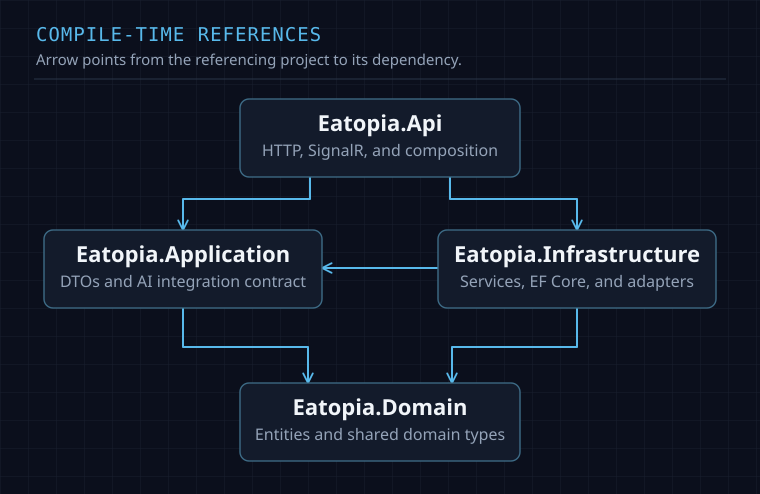

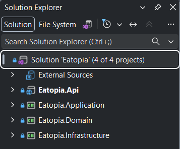
Runtime request flow
ASP.NET Core routes requests to controllers and hosts the SignalR chat hub. Controllers use injected services for workflows such as meal logging and chat. Infrastructure services access SQL Server through EatopiaDbContext, and code that needs AI integration calls IFoodAiClient.
- Eatopia.Api
- Defines controllers, the SignalR hub, request middleware, Swagger configuration, and dependency registration.
- Eatopia.Application
- Contains DTOs, shared application helpers, and the food AI client interface.
- Eatopia.Domain
- Contains entities, the shared base entity, and role constants. It has no project references.
- Eatopia.Infrastructure
- Implements services, SQL Server persistence, migrations, schema compatibility work, and external adapters for AI and email.
Sources Solution file · API composition root · Infrastructure project references
Database design
The SQL Server overview covers 28 application tables plus EF Core's migration history table. The module diagrams show the column names, primary keys, and relationship evidence from the migrations, schema repair SQL, and current EF model.
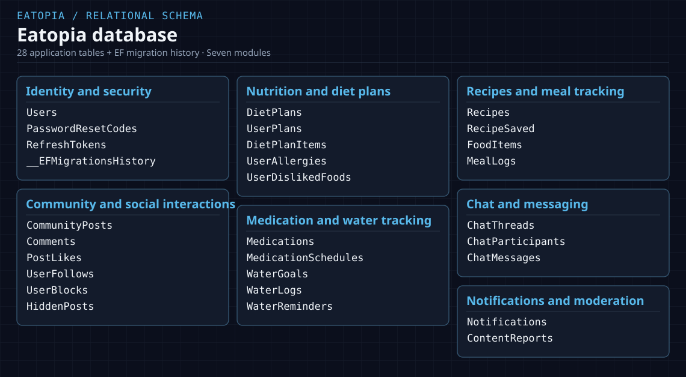
How to read the relationships
PK marks a primary key. A solid FK arrow points to a target column declared by a checked-in migration. A dashed EF arrow shows a model relationship with no matching constraint in the checked-in DDL. For example, the migration constrains Notifications.UserId, and the EF model separately maps ActorUserId. ChatThreads.RequestedByUserId is shown as a scalar column.

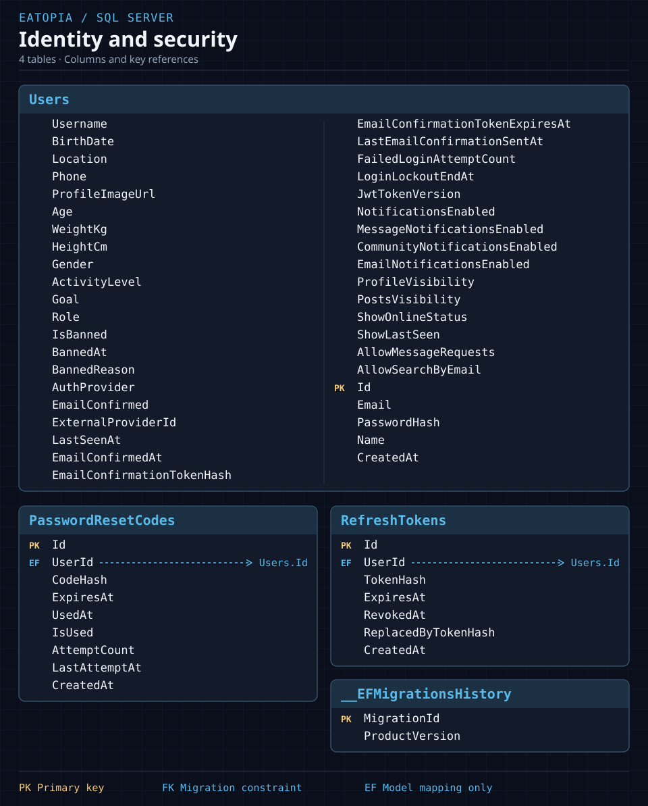

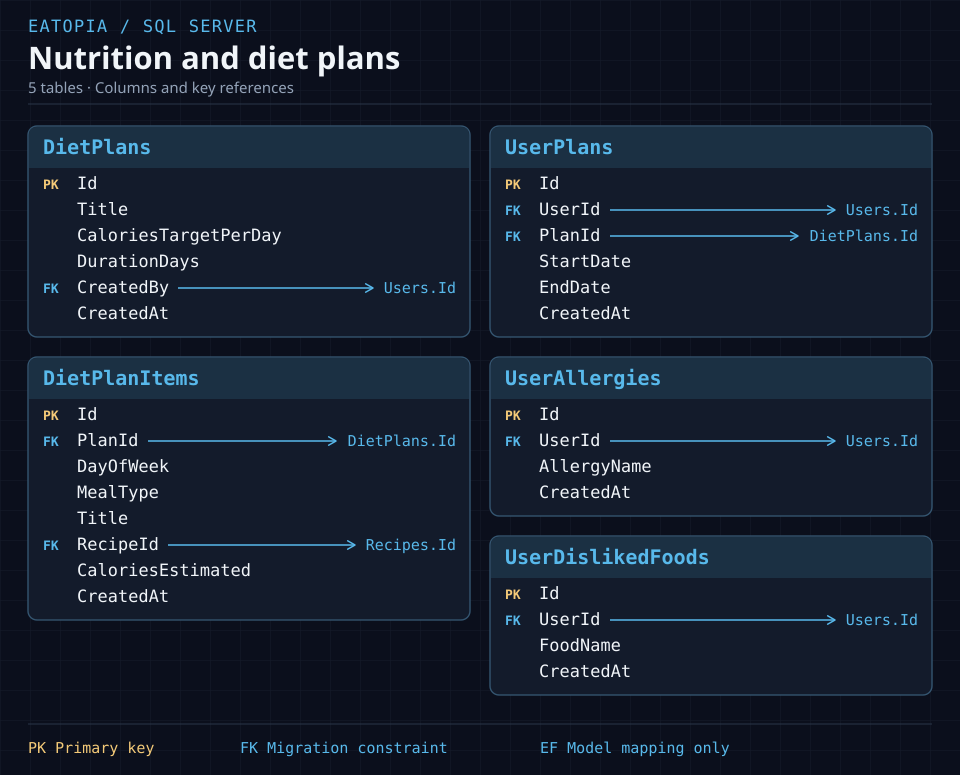

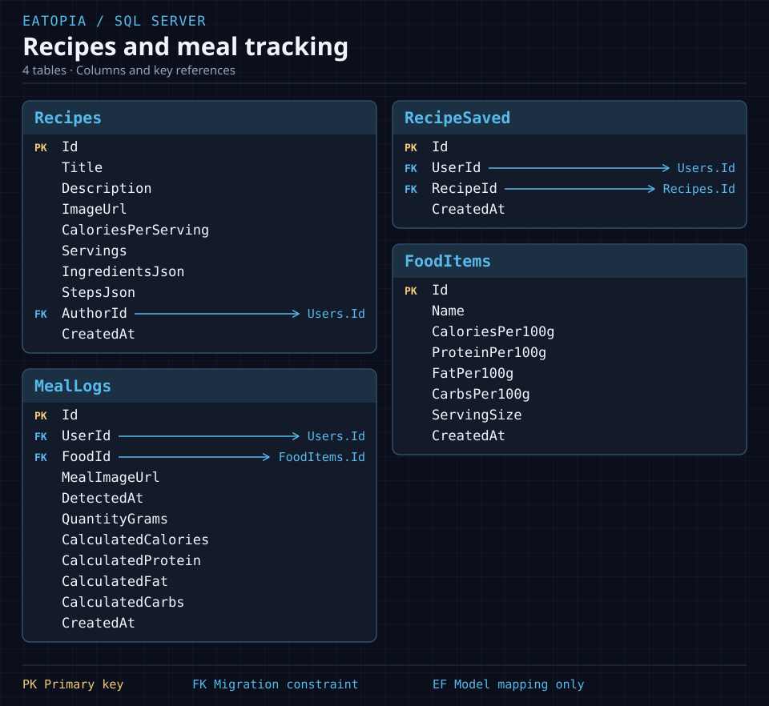

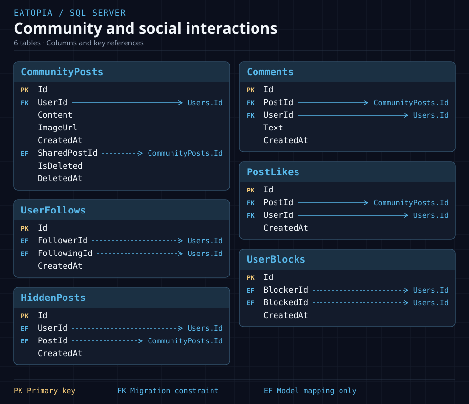

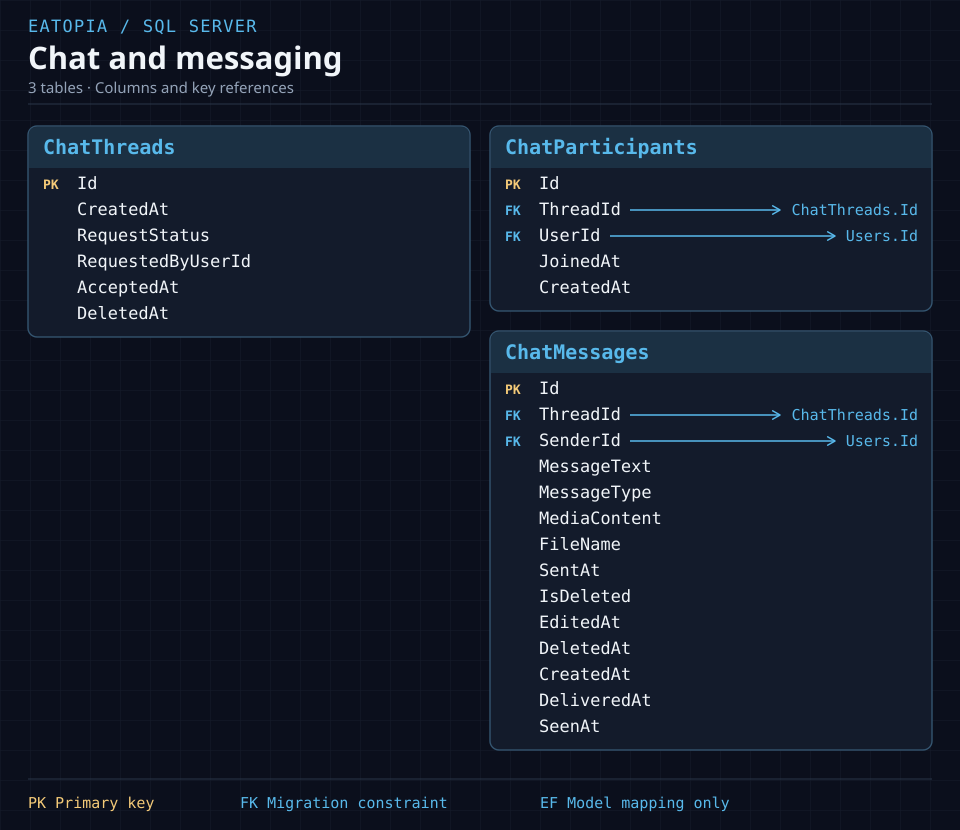

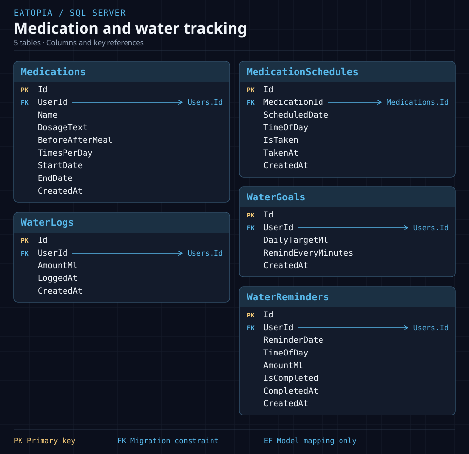

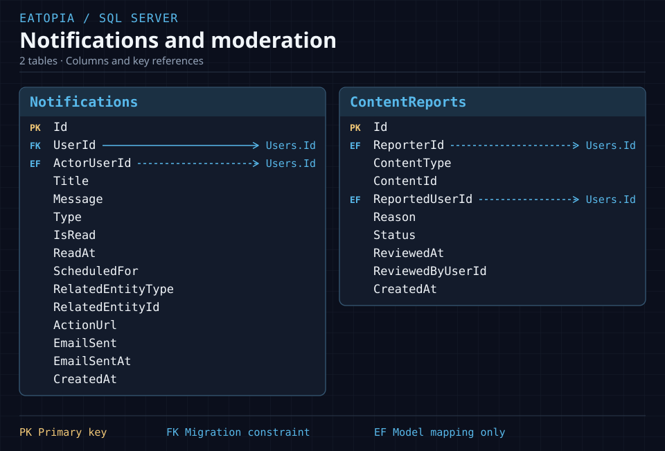
Sources EF Core migrations · EF Core mappings · Community and auth schema repair
Key features
-
Authentication and authorization
JWT bearer authentication protects account and application endpoints. The API supports activation, password reset, hashed refresh tokens, and role checks for elevated actions.
-
AI integration
The .NET backend calls a Python runner through
IFoodAiClientfor food-image analysis and AI-generated diet plans. The adapter passes typed JSON between the API and the runner. -
Nutrition plans and meal logs
Users can assign a stored plan, retrieve the active plan, and maintain allergies and disliked foods. Meal logs store quantities and derive calories and macronutrients from food data.
-
Recipes
The catalog exposes searchable, paged recipes. Authenticated users can save recipes, and elevated roles can manage the catalog.
-
Medication and water tracking
Users can manage medication schedules, mark doses taken, configure water goals and reminders, and log water intake.
-
Community interactions
Profiles, posts, comments, likes, follows, and blocks support the community. Feed and profile queries account for user privacy settings.
-
Chat and messaging
The chat service persists conversations and messages. SignalR delivers real-time message and typing events to authorized participants.
-
Notifications and moderation
A hosted worker checks due reminders when enabled. Users can manage notification preferences, and authorized staff can review reports and moderate content or accounts.
Architecture and design patterns
- Layered architecture
- The code uses a Clean Architecture-style project structure. Domain stands on its own, Application references Domain, and the API composes Application and Infrastructure. Some controllers call concrete infrastructure services or the DbContext directly.
- Data access
- The inspected application services use EF Core through
EatopiaDbContext. Although the README lists a Repository Pattern, the reviewed implementation paths use direct EF queries. - Dependency injection
- The API registers scoped services and the DbContext centrally. It supplies
PythonAiClientthrough theIFoodAiClientinterface. - Separation of concerns
- DTOs describe request and response data, chat and reminder services handle workflow rules, and adapters handle Python execution and email delivery.
Sources Meal service data access · AI client interface
API documentation
Swagger is enabled for development. The API groups routes by accounts, nutrition, recipes, health tracking, community, chat, notifications, and administration. The capture shows admin operations under both /api/v1/admin and the unversioned /api/admin alias.
Authorization is set on controllers and actions. Recipe browsing is public, saving a recipe requires authentication, and recipe changes and administrative actions use elevated-role checks.
Sources Controllers · Swagger and authentication setup

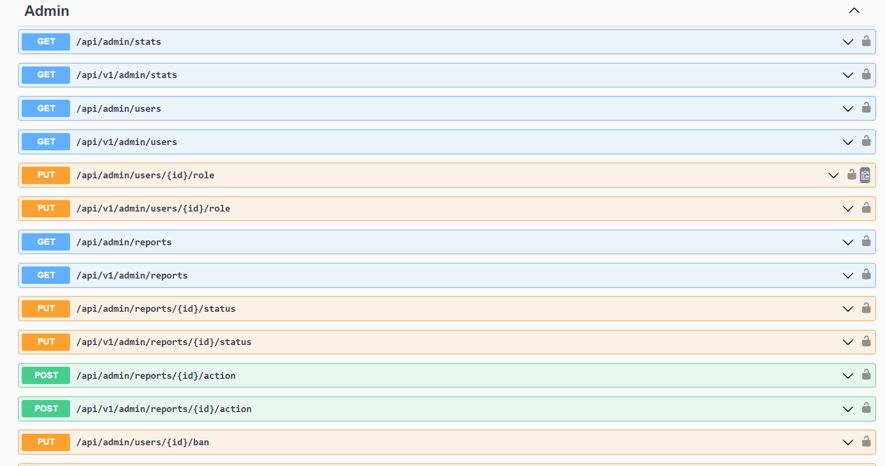
Technical challenges and solutions
- Connecting the API to Python
- The backend isolates the subprocess behind
IFoodAiClientand bounds execution with timeouts. Controllers and meal services consume structured results from that adapter. - Keeping nutrition calculations consistent
- Meal logging normalizes nutrient data per 100 grams, then calculates and stores calories, protein, fat, and carbs using the logged portion size.
- Applying account changes to active sessions
- JWT validation reads the user's current account record and token version. Logging out all devices increments the version, so earlier access tokens can be rejected.
- Checking chat membership
- The SignalR hub checks thread membership before joining a conversation group. The service checks participation and message ownership in its read and update workflows.
- Handling due reminders
- A background worker checks due water and medication reminders, looks up an existing notification for each reminder, and can retry email delivery when the notification exists and email is still pending.
- Maintaining older local schemas
- Migration history and the current model differ. The repository includes conditional schema repair SQL that adds missing objects and fields in development when older databases need them.
Sources Python adapter · Chat hub · Reminder worker